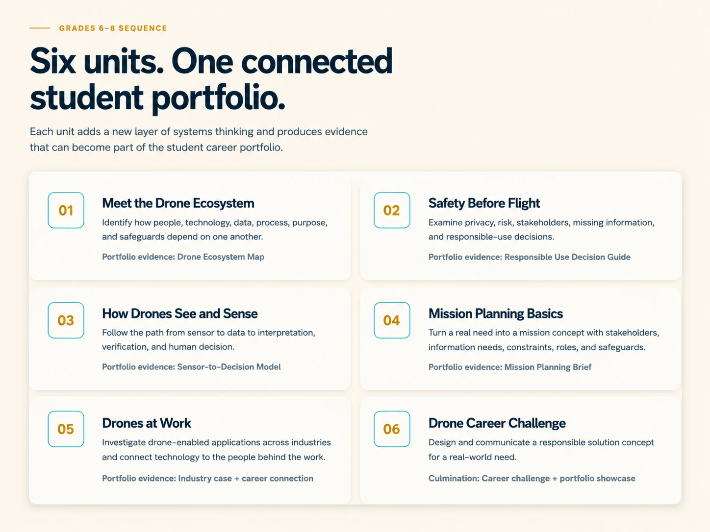

Explore career clusters, industry trends, and next-step training pathways.
Middle School at a Glance
Students begin by seeing drones as part of a connected system of people, technology, data, process, purpose, safeguards, and human decisions.
See where the pathway leads next—FAA Remote Pilot eligibility begins at age 16.
Six units. One connected student portfolio.
Each unit adds a new layer of systems thinking and produces evidence that can become part of the student career portfolio.

Flexible learning environments.
Students build evidence through systems maps, responsible-use decisions, sensor/data reasoning, mission proposals, industry cases, and a final career challenge.
Classroom, simulation & flight connections
Classroom instruction can include cases, systems maps, mission planning, image/data analysis, and career challenges. Simulation-based and supervised flight experiences may also be incorporated through school or partner programs when appropriate to local resources, policies, and instructional goals.
Flexible configurations support classroom, simulation-based, and supervised flight connections.